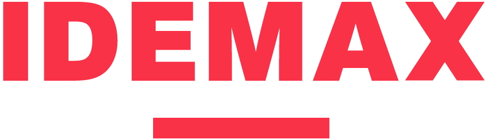

Qué cambió, por qué, y qué va en la v2 para TIMining.
Desde el Touchpoint 1 (19-feb), procesamos feedback y nuevas fuentes.
Cada dominio tiene pilares líderes y secundarios. No todos los cruces pesan igual. [IG-24]
| Quiet UI | Clear Path | Time Sight | Omni Sense | |
|---|---|---|---|---|
| AE (envolvente) | ●● | ●● | ●●● | ●●● |
| A · Crisis | ●●● | ●●● | ●●● | ●● |
| B · Anticipación | ●○ | ●● | ●●● | ●○ |
| C · Asistencia | ●○ | ●● | ●○ | ●●● |
Único dominio donde 3 pilares operan a máxima intensidad. Si hay un solo caso para demostrar el sistema, es el Caso #1.
Líder en Asistencia + co-líder en Alineación. Carlos lo priorizó post-Touchpoint. La presentación actual lo trata como "cuarto pilar" — debería elevarse.
La celda más débil. El usuario busca al sistema activamente — no necesita "silencio." Confirma la asimetría [IG-24].
Pico en Crisis · Valle en Asistencia
Consola acromática que solo ilumina la anomalía. En Asistencia el usuario busca al sistema — no necesita silencio.
Transversal · Nunca lidera solo
Siempre en la etapa R (Recomendación). Sin Clear Path, los otros tres son datos sin prescripción.
El más consistente · 3 de 4 dominios
Líder en Anticipación + Alineación. Solo se debilita en Asistencia donde el contexto temporal es complementario.
Líder emergente · Priorizado por CTO
Canal = inteligencia. WhatsApp, radio, IROC. Líder en Asistencia + co-líder en Alineación.
| Antes | Después |
|---|---|
| "Cumplir el plan minero" | Mejoramiento continuo del plan |
| Garantía de cumplimiento | Planificación permanente |
| Meta fija → adherencia | Meta adaptativa → optimización |
| TIMining verifica | TIMining mejora |
El plan es correcto — optimizar la ejecución turno a turno.
El plan es incorrecto — detectar y ajustar antes de que el costo sea irrecuperable.
[IG-SYNTH-16] INVALIDATED — concepto válido, nombre rechazado. El eje que validaron es tiempo.
El tiempo entre dato y decisión debe ser cero. El sistema comprime el camino de dato a acción: detecta, analiza y recomienda antes de que el operador levante la radio.
| "Paz mental" (abstracto) | "Tiempo Cero" (accionable) |
|---|---|
| Tranquilidad operativa | Dato → decisión sin demora |
| Certeza | "No tengo tiempo para pensar" |
| Confianza | El sistema ya pensó por ti |
Pendiente: Propagar a STRATEGIC_VISION.md (actualmente dice "Reducción de Carga Cognitiva"). Actualizar slides 05 y 12 de la presentación v2.
De las entrevistas salió un prerrequisito que no teníamos en el framework.
Los mineros "de camioneta" prefieren confiar en su experiencia cuando la plataforma muestra algo diferente. No es un problema de UX — es un problema de credibilidad del dato.
No es un pilar ni un dominio. Es el piso sobre el que se para toda la matriz. Si falla, el operador vuelve a la radio y al Excel.
Implicancia: El sistema debe demostrar que sus datos son correctos — mostrar fuente, timestamp, comparación con medición manual.
IG-SYNTH-09 (WhatsApp): 13→16/65
IG-SYNTH-11 (curva aprendizaje): 8→9/65
IG-06 (perfiles diferenciados): 3→5/65
IG-20 (CFO invisible): 2→3/65
IG-SYNTH-18 (alertas geo): 8→9/65
Follow-up, no redo. "Lo que refinamos con su feedback."
| Bloque | v1 (Touchpoint 1) | v2 (Follow-up) | |
|---|---|---|---|
| Pilares | 4 cards genéricos | + cadena funcional + Omni Sense elevado | PROFUNDIZAR |
| "Paz Mental" | Slides 05/12 | → "Tiempo Cero" | REEMPLAZAR |
| Benchmark | 1 slide por pilar | Bench cruzado pilar × dominio showcase | NUEVO |
| Dominios | 4 pares (slide 13) | AE envolvente + 3 operativos | REESTRUCTURAR |
| Casos #6-8 | Narrativa "cumplir plan" | → "mejoramiento continuo" / "reconfiguración" | AJUSTAR |
| Mockups | Vizzes genéricas | Moodboards concretos por pilar×dominio | NUEVO |
| Confianza | — | Slide prerrequisito de adopción [IG-28] | NUEVO |
